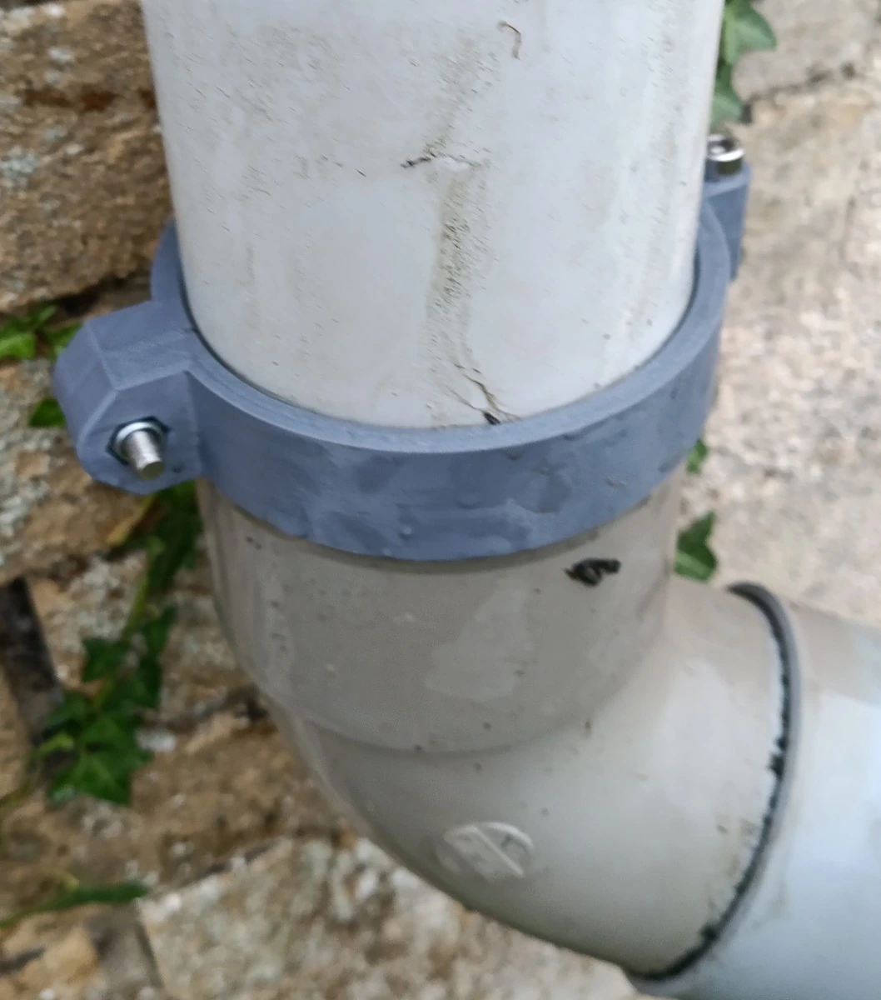
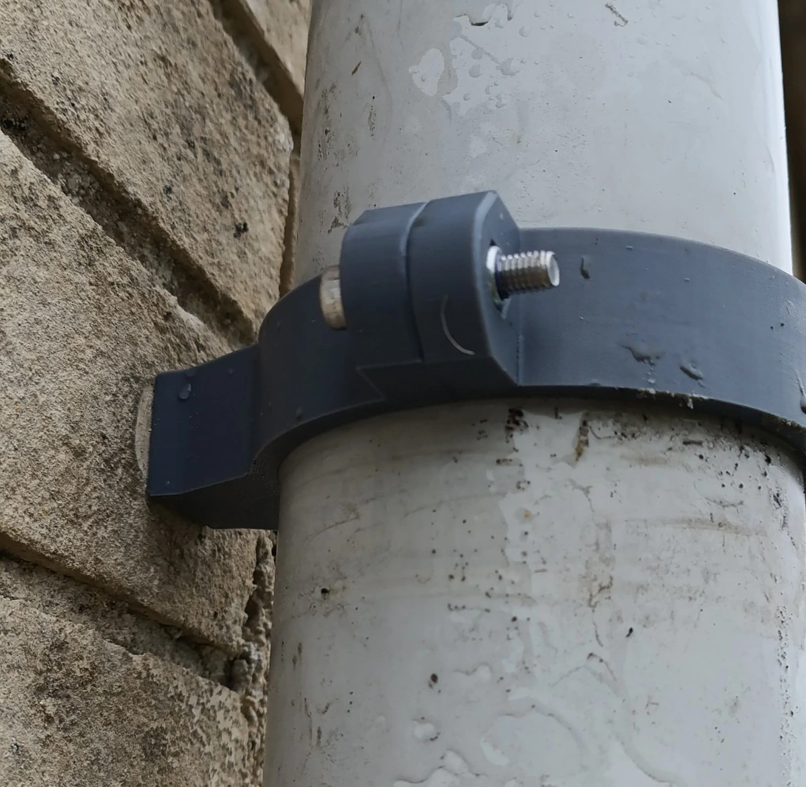
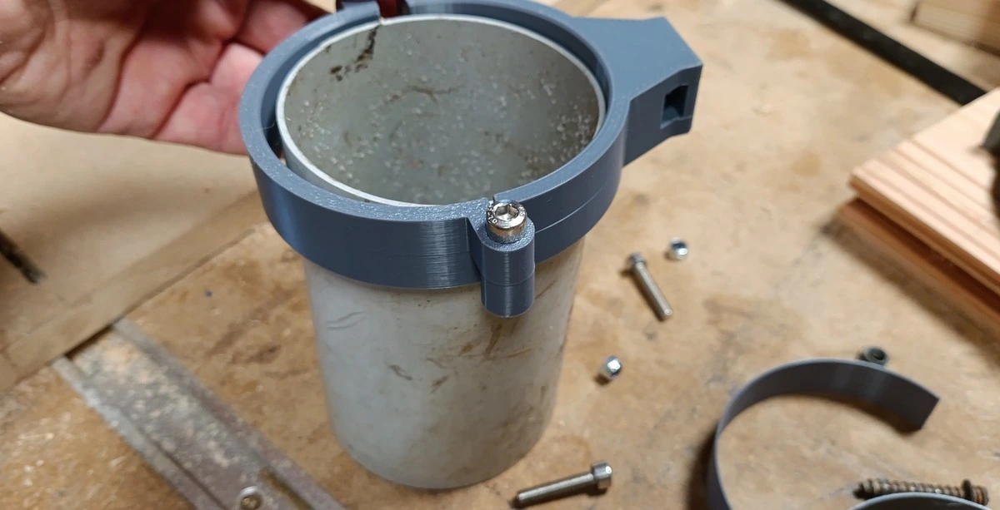
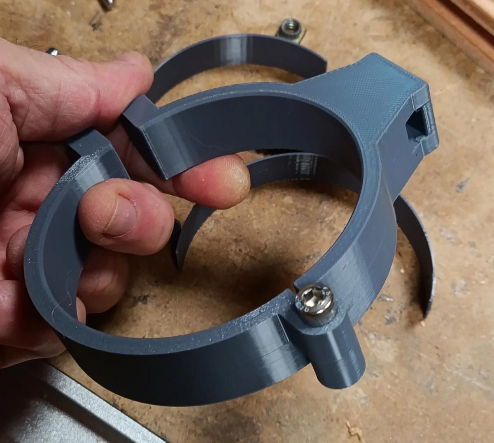
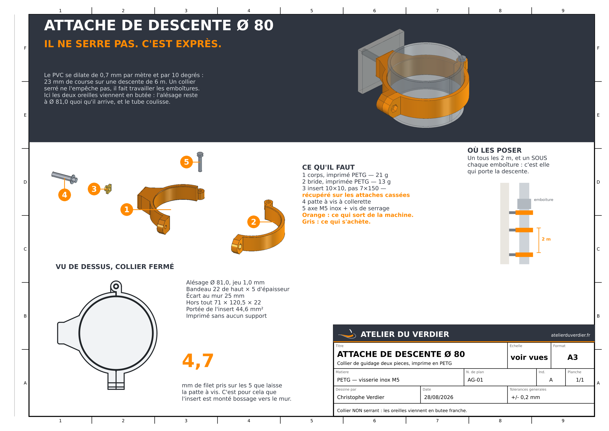

Cliquer n'importe où, ou Échap, pour fermer
Les attaches d'origine ont cassé. Celles-ci les remplacent, sur l'insert récupéré dans les anciennes — et elles ne serrent pas la descente : c'est exprès. Elles sont posées, et le tube coulisse.
Toute la descente est équipée. Les photos qui suivent sont celles de la pose, pas des rendus : pour une pièce dont on prétend qu'elle tient sans serrer, c'est la seule preuve qui vaille.


Christophe, la descente équipée : « l'écrou est du mauvais côté, car j'ai dû visser la vis qui était contre le mur et c'était pas évident ». L'empreinte hexagonale était creusée dans la face extérieure de la bride, donc la tête de vis venait porter sur la face murale de l'oreille. Pour serrer, il fallait glisser le tournevis entre le collier et le mur — à l'aveugle, à bout de bras, sur une échelle. Les deux sont intervertis : l'écrou côté mur, où il n'a jamais besoin qu'on le tourne, la tête dehors.
Les deux oreilles sont symétriques, l'assemblage se refermait à 0,000 mm de jeu, aucune interpénétration, et les 51 contrôles passaient. Le défaut n'était pas dans la pièce, il était dans le geste — et un geste ne se mesure pas sur un solide. Il se contrôle une fois qu'on sait le nommer : on sonde un point entre l'axe de la vis et un plat de l'écrou, qui doit être vide côté mur et plein dehors. Éprouvé à rebours sur une copie portant l'ancienne disposition : les deux lignes rougissent.
Les colliers des photos ci-dessus portent l'ancienne disposition, et les fichiers publiés plus bas ne sont donc plus ceux qui sont sur le mur. Rien à reprendre sur la descente : ils tiennent, ils sont seulement pénibles à serrer. Le corps perd 198,6 mm³ dans l'échange, la bride en gagne 161,8.
Le PVC se dilate de 0,7 mm par mètre et par 10 degrés. Sur une descente de six mètres, entre le gel du matin et le plein soleil, cela fait vingt-trois millimètres de course. Un collier serré ne l'empêche pas : il fait travailler les emboîtures jusqu'à ce qu'elles fuient ou se déboîtent. Le fabricant le dit d'ailleurs lui-même — « sauf cas particuliers, les colliers ne doivent pas être serrant afin de permettre le glissement de la canalisation lors des dilatations ».
D'où le parti pris : les deux oreilles de serrage viennent en butée franche l'une contre l'autre. On peut serrer la vis à fond, l'alésage reste à Ø 81 — soit 1 mm de jeu au diamètre autour du tube Ø 80. Le réglage n'est plus dans le poignet du poseur, il est dans la géométrie.
C'est une histoire de couches. L'imprimante pose des tranches horizontales, l'une sur l'autre, et chaque nouvelle tranche doit trouver quelque chose dessous où s'appuyer.
Dans un trou rond couché, ça se passe bien tant qu'on monte le long du flanc. Mais près du sommet la paroi devient horizontale : une couche devrait avancer de plusieurs millimètres vers l'intérieur, en l'air. Elle pend, elle s'affaisse dans le trou — et le trancheur réclame du support.
La goutte remplace cette calotte par deux pentes à 45°. Sur une pente à 45°, chaque couche n'avance que de sa propre épaisseur : elle repose toujours à moitié sur celle d'en dessous. Rien ne pend.
C'est pour ça que la pointe n'a aucune fonction mécanique : c'est du vide de plus, au-dessus de la tête de vis, là où rien ne travaille. Elle ne sert qu'à donner aux couches un endroit où se poser.
Un collier tous les deux mètres au plus, et un sous chaque emboîture : l'emboîture, plus grosse que le tube, repose sur le collier et la descente ne peut plus glisser. Là où il n'y en a pas à portée, une cale de 0,8 mm se clipse sur le tube et le collier se referme dessus avec 0,6 mm de serrage — une valeur figée par la butée, pas estimée.
Il ne s'achète pas : il se dévisse des anciennes. Base carrée 10 × 10 × 3, surmontée d'un bossage fileté Ø 8 × 3, au pas 7 × 150 — le standard couverture français. Ce sont donc ses cotes qui commandent tout le dessin de l'embase, et pas l'inverse : on n'en commande pas, on les récupère. Qui n'en a pas — ou dont les inserts ont cassé eux aussi — prendra la variante à vis ordinaire, plus bas.
La patte à vis n'offre que 5 mm de filet au-delà de sa collerette. Il faut donc que le taraudage attaque tout de suite : l'insert est monté bossage vers le mur, ce qui en prend 4,7 mm sur 5. Monté dans l'autre sens, on n'en prendrait qu'un peu plus d'un millimètre.
Il se glisse par le côté, en retrait, et c'est la vis qui l'amène ensuite en butée toute seule — dans un assemblage boulonné, l'écrou est tiré vers la tête, pas poussé. Deux lèvres de 0,45 mm l'empêchent de retomber pendant qu'on prépare les colliers à l'établi.

Deux formes ont été corrigées pour ça, et chacune après mesure. La charnière est passée de trois nœuds à deux : à trois, le nœud supérieur du corps démarrait en l'air, à quinze millimètres du plateau, et son support se retrouvait coincé dans l'articulation. Et le dessous de l'oreille de serrage, qui accusait 56 mm² de surplomb au-delà de 45°, se raccorde maintenant par deux pans à 45° tangents au bossage.
Reste 279 mm² au-delà de 45° sur les trois pièces, et ce sont tous des ponts — un pont FDM passe sans support jusqu'à une dizaine de millimètres. Le corps et la cale se posent à plat, la bride retournée ; les fichiers sortent déjà orientés, il n'y a rien à tourner.
Le plafond du logement de l'insert est un pont de 6,5 mm, et un pont PETG s'affaisse couramment de 0,1 à 0,3 mm — affaissement qui se retranche directement du jeu de l'insert. À 0,40 mm il n'en restait que 0,10 dans le pire cas, intenable sur une cote imprimée. Le jeu est donc à 0,60 mm, et les lèvres épaissies d'autant pour que le clipsage ne change pas.

Le modèle se pilote par deux valeurs, et rien d'autre : le diamètre de la descente et le mode de fixation. Il est engendré en Ø 63, Ø 80 et Ø 100, et au choix sur l'insert récupéré ou sur une vis ordinaire de 6 × 70 — pour qui n'a pas d'anciennes attaches à dévisser, ou dont les inserts sont cassés eux aussi.
Mesure faite avant d'écrire quoi que ce soit : le modèle construisait déjà des solides valides de Ø 40 à Ø 125, sans jamais lever d'erreur. Cinq grandeurs y étaient pourtant écrites en millimètres alors qu'elles expriment des rapports — à bandeau figé à 5 mm, le Ø 63 est 1,86 fois plus raide et le Ø 100 1,82 fois plus mou ; l'oreille passait 0,337 mm sous le bandeau à Ø 63, si bien que la pièce se serait imprimée en équilibre sur une génératrice ; et à petit évasement le couloir de l'insert se bouchait sans qu'aucun contrôle le voie. Elles se dérivent désormais du diamètre.
Le Ø 80 à insert sort inchangé, et c'est vérifié plutôt qu'espéré : sur les trois pièces, deux fichiers sont identiques octet pour octet avant et après, et le troisième a les mêmes 1 462 sommets et 2 930 facettes rigoureusement identiques sur 2 932 — les deux restantes étant un même quadrilatère plat retriangulé sur l'autre diagonale.

Trois pièces par collier, déjà orientées comme elles se posent sur le plateau — rien à retourner, et aucun support. Le tableau donne les 3 diamètres et les deux fixations ; prenez la ligne qui correspond à votre descente.
| descente | fixation | les trois pièces |
|---|---|---|
| Ø 63 | insert récupéré | corps 141 Ko · bride 78 Ko · cale_point_fixe 19 Ko |
| Ø 80 | insert récupéré | corps 144 Ko · bride 82 Ko · cale_point_fixe 22 Ko |
| Ø 80 | vis 6 × 70 | corps 140 Ko · bride 82 Ko · cale_point_fixe 22 Ko |
| Ø 100 | vis 6 × 70 | corps 144 Ko · bride 85 Ko · cale_point_fixe 24 Ko |
La cale ne se pose qu'à un seul collier de la descente, celui qui fait point fixe : c'est elle qui empêche le tube de descendre tout seul. Les autres le laissent coulisser, et c'est le but.
Imprimé le 28 août 2026, et toute la descente en est équipée. Les trois paris du dessin ont tenu du premier coup : le tube coulisse dans l'alésage à Ø 81 une fois les oreilles en butée franche — c'est toute la thèse du collier —, l'insert récupéré clipse et tient dans ses 0,60 mm de jeu, et la vis M5 inox taille son filet dans le PETG sur 10,8 mm de prise, sans écrou ni insert laiton.
Ce sont des verdicts d'usage, pas des relevés. Les
53 contrôles de verifier.py mesurent
les solides ; la pose, elle, n'a rien mesuré. Restent donc sans
chiffre le Ø du lamage de collerette — il reçoit bien la patte à vis,
puisque les colliers sont au mur — et le serrage réel de la cale, qui
attend la première descente sans emboîture à portée.
Une patte à vis à collerette avec sa cheville, l'insert récupéré, et deux vis inox M5 × 25 avec un écrou — l'une sert d'axe de charnière et se taraude dans le corps, l'autre serre. Axe retenu : vis M5 inox, avec 10,8 mm de prise dans chaque nœud.